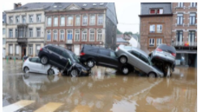
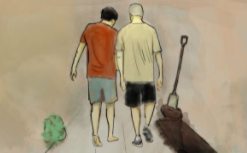
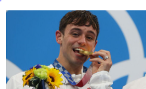

B_B NEWS / MUNDO
“La primera vez que el país será gobernado por un campesino”: los mensajes clave del discurso de Pedro Castillo en su toma de posesión como presidente de Perú
“La primera vez que el país será gobernado por un campesino”: los mensajes clave del discurso de Pedro Castillo en su toma de posesión como presidente de Perú 5 horas.
  Qué esperar de los Juegos Olímpicos de Tokio: consulta el calendario de las competencias
Inundaciones en Alemania: las impresionantes fotos tras las fuertes lluvias en Europa
La familia que alquiló una casa y encontró a la dueña enterrada en el jardín
Olímpicos de Tokio: Tom Daley, el niño prodigio de los clavados que logró la medalla de oro en sus cuartos Juegos
Redes Sociales: